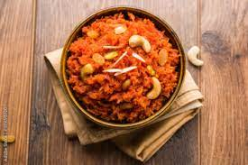

Gajar ka halwa, also known as gajorer halua, gajrela, gajar pak, and carrot halwa is a carrot-based sweet
dessert pudding made by placing grated carrots in a pot containing a specific amount of water, milk and sugar, cardamom
and then cooking while stirring regularly. It is often served with a garnish of almonds and pistachios.
The nuts and other items used are first sautéed in ghee, a type of clarified butter from the Indian subcontinent.
The dessert is traditionally eaten during all of the festivals in the Indian subcontinent, mainly on the occasion of
Diwali, Holi, Raksha Bandhan, and Eid. It is served hot during the winter.
- First rinse 650 grams carrots (8 to 9 medium-sized tender, juicy carrots or 6 to 7 long carrots) a few times in water.
- Next, grate the carrots with a box grater or in a food processor. You can measure the grated carrots with a standard
measuring cup and you will need about 4 to 4.5 cups of grated carrots.
- In a heavy kadai or wok, add all of the grated carrots.
- Pour in 4 cups full-fat milk. Switch on the burner.
- Mix the grated carrots and milk together.
- Cook this mixture on a low-medium heat. After a few minutes, the milk will begin to froth and then start slowly reducing.
- Keep stirring this halwa mixture often, scraping the sides of the kadai to remove the evaporated milk solids.
Stir the milk solids into the cooking mixture.
- Cook the carrot and milk mixture until the liquid is reduced by 75%.
- Add 4 tablespoons ghee (clarified butter). Note that some milk will be there when you add the ghee.
- Next, add 10 to 12 tablespoons sugar, or to taste.
- Simmer till the gajar ka halwa mixture starts to thicken and reduces more. Stir at intervals until mixture becomes dry.